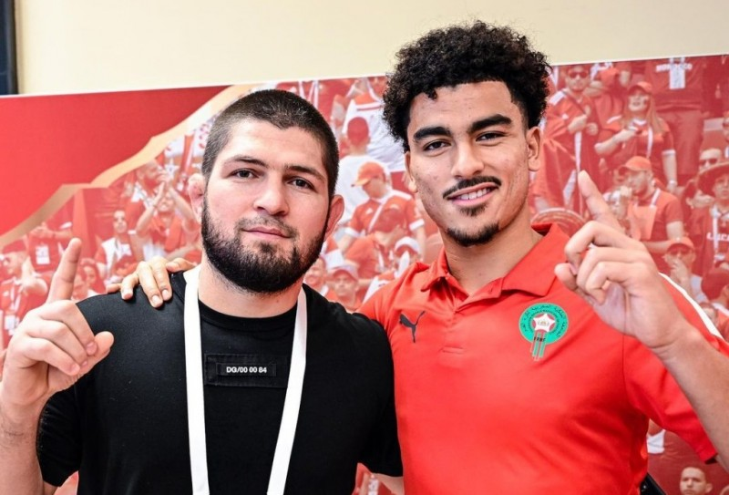
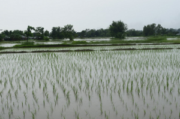
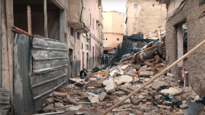

Khabib Nurmagomedov Visits Morocco’s Atlas Lions in Qatar
Rabat - Russian former mixed martial artist Khabib Nurmagomedov today paid a visit to Morocco’s national football team in Doha to offer them support ahead of their third-place game against Croatia.
Following their semi-finals defeats, the Atlas Lions and Croatia are set to lock horns on Saturday at the Khalifa International Stadium in Al Rayyan Qatar for a chance at claiming third-place.
Nurmagomedov has been offering the Moroccan team his unwavering support and encouragement throughout the ongoing Qatar World Cup.
He posted on Instagram a video from Morocco’s semifinals game against France, featuring the North African country’s national anthem. “Let’s go Moroccan Brothers,” the caption read.

New Weather Alert Forecasts Stormy Rainfall Across Morocco
Rabat - Morocco’s General Directorate of Meteorology (DMN) announced today a new weather alert, forecasting heavy rainfall and snowfall on Thursday and Friday in several provinces across Morocco.
Heavy rainfall between 30 and 70 millimeters will affect the provinces of Chefchaouen, Taounate, Tetouan, Al Hoceima, Ouezzane, Sefrou, Ifrane, Taza, Khenifra, and Beni Mellal.
Rainfall ranging between 20 and 40 millimeters is also expected in the provinces of Larache, Fahs-Anjra, Tangier-Asilah, and Kenitra during the same period.
Winds between 50 and 70 kilometers per hour will meanwhile hit the Rif, the Saiss, the high and middle Atlas and the Oriental regions.

Building Collapses in Casablanca, Kills 3 People
Rabat - Three people died on Thursday morning after a house collapsed in the Moroccan city of Casablanca due to the heavy and storming rain that hit the region, local authorities reported.
The collapsed house was among a list of buildings that local authorities had classified as being at risk of collapsing.
The two-story house collapsed at approximately 1:30 a.m.
The tragic event shocked the residents of the Hay Al Fida neighborhood, with many demanding that local authorities find a solution to the recurring incident of houses collapsing.
The house, located in the Smara district, was classified as a dwelling in danger of ruin, according to the local authorities of the Al-Fida-Mers Sultan prefecture.
The body of one of the victims was retrieved from the rubble of a traditional oven on the first floor of the collapsed house. The two other victims, who were living in an adjacent house to the collapsed building, passed away at the hospital.
